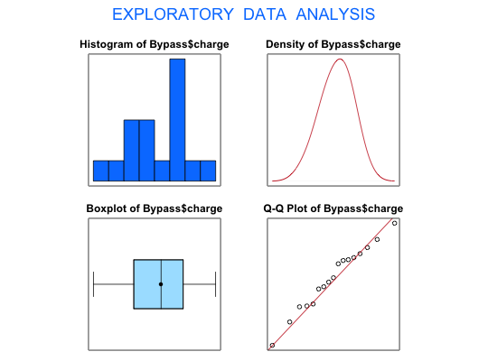

Data for Exercises 5.104 and 6.43
Bypass
A data frame with 17 observations on the following two variables.
Carolinas Med
Ct, Duke Med Ct, Durham Regional, Forsyth Memorial,
Frye Regional, High Point Regional, Memorial Mission,
Mercy, Moore Regional, Moses Cone Memorial, NC
Baptist, New Hanover Regional, Pitt Co. Memorial,
Presbyterian, Rex, Univ of North Carolina, and Wake
CountyKitchens, L. J. (2003) Basic Statistics and Data Analysis. Duxbury
#> [1] "Bypass$charge" #>#> Size (n) Missing Minimum 1st Qu Mean Median #> 17.000 0.000 24810.000 29359.000 32406.294 32428.000 #> TrMean 3rd Qu Max. Stdev. Var. SE Mean #> 32406.294 34919.500 38578.000 3590.560 12892118.346 870.839 #> I.Q.R. Range Kurtosis Skewness SW p-val #> 5560.500 13768.000 -0.774 -0.311 0.936 #>t.test(Bypass$charge, conf.level=.90)$conf#> [1] 30885.91 33926.68 #> attr(,"conf.level") #> [1] 0.9 #>t.test(Bypass$charge, mu = 35000)#> #> One Sample t-test #> #> data: Bypass$charge #> t = -2.9784, df = 16, p-value = 0.00887 #> alternative hypothesis: true mean is not equal to 35000 #> 95 percent confidence interval: #> 30560.20 34252.39 #> sample estimates: #> mean of x #> 32406.29 #> #>